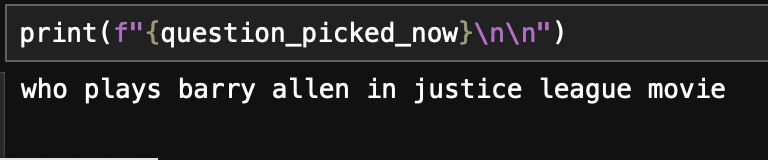
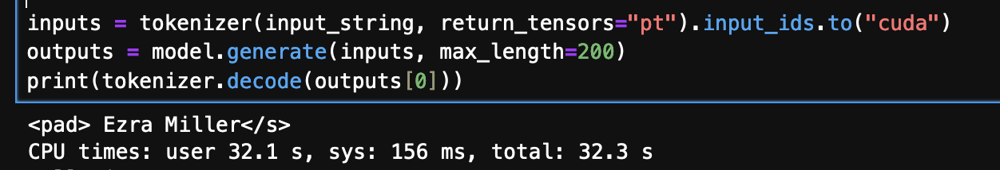

Retrieval Augmented Generation (RAG)
Introduction
RAG is the technique to harness the power of LLMs such that LLMs can be used to serve a user's custom purpose. LLMs are, in almost all the cases, trained with the data that is available online. This means the contents to train LLMs have following properties:
- has too much information , which are oftentimes unnecessary,
- may not contain enough information about the documents that a user is interested in.
Let us take an example of some proprietary documents from your company. You want to use the power of LLM to be able to answer questions from the information contained within those documents. Training of LLMs could pose unnecessary cost; plus, your company may not have enough data or resource or time to train a model for this specific case. This is where the concept of RAG comes into play.
RAG still uses LLMs to be able to answer questions. However, the text string that is fed into the LLM as a prompt is modified such that the LLM is forced to derive answer from the content of the string or the prompt. If we can construct the prompt from the documents that we are interested in, and force the LLM to answer from the content of the prompt, we achieve our goal of acquiring answers from the document that we want the answers from.
Thus, Retrieval Augmented Generation (RAG) is a type of prompt engineering that unleashes the power of pre-trained LLM to extract information from user prescribed documents.
Please visit the RAG description page for a complete picture on the concept of RAG.
RAG Development
Getting Ready
First, let us install the required components. Following are the items that we will be needing.
pip install chromadb pip install sentence_transformers pip install pandas pip install rouge_score pip install nltk pip install accelerate transformers
Code Development
We have identified 4 major steps in the process of RAG development. We will include a prelude section, that needs to be done before the 4 steps. The 4 steps will be included sequentially below, following the prelude section. All the code presented here, collected and compiled should be runnable.
Please visit the RAG description page for a complete picture on the concept of RAG, and to know more about the steps.
Prelude
- Import Embedding Functions, and sentence transformers
- Let us create our embedding function using one of the most popular sentence embedding model available, all-MiniLM-L6-v2 .
try: from sentence_transformers import SentenceTransformer except Exception as e: print(f"Error importing Sentence Transformers.") print(f"Actual error is: {str(e)}") try: import chromadb from chromadb.api.types import EmbeddingFunction except Exception as e: print(f"Error importing chromadb") print(f"Actual error is {str(e)}")
class embeddingFunc(EmbeddingFunction): # this is from a list of sentence transformers # https://www.sbert.net/docs/pretrained_models.html#sentence-embedding-models/ model = SentenceTransformer('all-MiniLM-L6-v2') def __call__(self, texts): return embeddingFunc.model.encode(texts).tolist() our_embedding_Func = embeddingFunc()
Step 1: Embedding Documents
- Let us read the documents.
- The documents are derived from Wikipedia and online articles.
- The document data are saved into a (.tsv) file.
- Each document have a id and title, so the column name of the data read from the .tsv file are id, text and title .
- In my case, the document is saved in a file name documents.tsv inside folder knowledge_base .
- My dataframe is named knowledge_base .
- Let us embed the document and save into the vector database.
- Let us first create a database and a collection inside the database.
- I named my database as chroma_db and my collection as my_rag .
- Let us describe a function that adds data into the collection of the vector database.
- Now, let us embed dataframe knowledge_base into the database.
- We will create a metadata out of the title and id .
import os folder_name = "knowledge_base" f_name = "documents.tsv" knowledge_base = pd.read_csv(os.path.join(folder_name,f_name),sep="\t") print(f"knowledge read of shape: {knowledge_base.shape}") print(f"{knowledge_base.columns}")
db_folder_name = "chroma_db" ch_client = chromadb.PersistentClient(path=db_folder_name) # let us create a colection; if the collection exists, it will get the collection collection_name = "my_rag" ch_collection = ch_client.get_or_create_collection(name = collection_name, embedding_function = our_embedding_Func)
# upsert because upsert has benefits over just adding, # .. if id already exists, upsert updates the data; else adds the data def add(texts,metadata,id): ch_collection.upsert(metadatas=metadata,documents=texts,ids=id)
text_from_knowledgebase = knowledge_base['text'].tolist() metadata = [{'title':title, 'id': id} for (title,id) in zip(knowledge_base.title, knowledge_base.id)] ids = [str(i) for i in knowledge_base.id] add(text_from_knowledgebase,metadata,ids)
Step 2 & 3: Searching Relevant Contexts for Question
- First, let us define a function to query the vector database.
- To query, we need a question that we want answer from. So, let us read a set of questions first.
- The data consists of questions and answers. The column names are qid, question, answer .
- Let us select a question at random. We will select relevant contexts for this question.
- Now, let us query 5 relevent contexts from the knowledge_base database.
# to search the dcuments from database def query(query_text,num_results=5): return ch_collection.query(query_texts=query_text,n_results=num_results)
qa_file_first = 'qa_first.tsv' first_data = pd.read_csv(qa_file_first,delimiter="\t") print(f"First data read is of shape {first_data.shape}")
# let us pick a randm question to play around with import random all_question_texts = first_data['question'].tolist() question_picked_now = random.choice(all_question_texts)
question_contexts = query(question_picked_now,5)
Step 4: Getting Answer
- Let us define the model. We will be using Google Flan-UL2 model . This will take a very long time to download for the first time. The model is saved into a cached folder, and will take significantly less time to load from second time onwards.
- Let us create a prompt by modifying a question statement by adding the relevant context.
- Let us feed the prompt into the model to get the answer. The final line of the following code prints the output.
# hint from https://huggingface.co/google/flan-ul2 from transformers import T5ForConditionalGeneration, AutoTokenizer import torch model = T5ForConditionalGeneration.from_pretrained("google/flan-ul2", torch_dtype=torch.bfloat16, device_map="auto") tokenizer = AutoTokenizer.from_pretrained("google/flan-ul2")
question_st = "Answer the following question based on the relevant contexts attached:" prompt = f"{question_st}"+\ "\n\n"+\ "contexts: "+\ "\n\n\n".join(question_contexts['documents'][0])+\ "\n\n"+\ "question: "+\ question_picked_now+\ "\n\n"+\ "answer:"
inputs = tokenizer(prompt, return_tensors="pt").input_ids.to("cuda") outputs = model.generate(inputs, max_length=200) print(tokenizer.decode(outputs[0]))
Validation
In my case, the question picked at random is shown below: 
Following is the answer produced: 